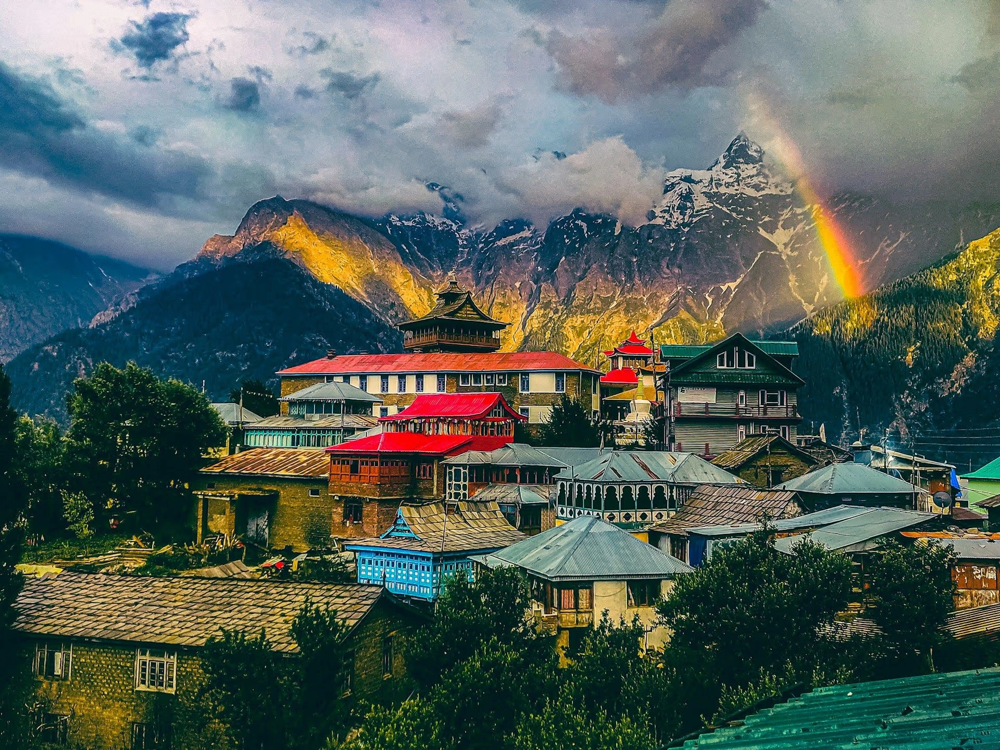

Nestled in the breathtaking Kinnaur district of Himachal Pradesh, Kalpa is one of the most scenic and peaceful mountain destinations in the Indian Himalayas. Surrounded by snow-covered peaks, apple orchards, pine forests, wooden villages, and panoramic Himalayan landscapes, Kalpa attracts nature lovers, photographers, backpackers, couples, and adventure travelers throughout the year. Located at an altitude of around 9,700 feet, Kalpa is famous for its spectacular views of the mighty Kinnaur Kailash mountain range. The calm atmosphere, traditional Himachali culture, ancient monasteries, and scenic beauty make Kalpa one of the most magical destinations in Himachal Pradesh. Whether you are planning a peaceful mountain retreat, Himachal road trip, photography tour, or backpacking adventure, Kalpa offers unforgettable Himalayan experiences far away from crowded tourist destinations.
Kalpa has a rich cultural and historical heritage deeply connected with Kinnauri traditions and Tibetan Buddhist influence. Historically, the region was an important part of the ancient Indo-Tibetan trade route connecting India with Tibet. The local people of Kinnaur have preserved their traditional wooden architecture, customs, language, and spiritual practices for centuries. Kalpa is also associated with Hindu mythology, as the sacred Kinnaur Kailash peak is believed to be one of the mythical abodes of Lord Shiva. Even today, Kalpa reflects a unique blend of Hindu and Buddhist culture, making it one of the most culturally rich destinations in Himachal Pradesh.
The Kinnaur Kailash View Point is the biggest attraction in Kalpa offering mesmerizing panoramic views of the snow-covered Kinnaur Kailash mountain range. During sunrise and sunset, the mountains glow beautifully with changing colors, creating magical Himalayan scenery perfect for photography and relaxation.


Suicide Point is a famous viewpoint near Kalpa known for dramatic cliffs, deep valleys, and breathtaking Himalayan landscapes. The location offers stunning panoramic scenery and is one of the most popular photography spots in Kinnaur.
Roghi Village is a beautiful traditional Himalayan village near Kalpa famous for wooden houses, apple orchards, and peaceful mountain scenery. The village offers an authentic glimpse into Kinnauri culture and rural Himalayan life.


Narayan Nagini Temple is one of the most important temples in Kalpa known for its beautiful wooden Himachali architecture and spiritual atmosphere. The temple reflects the unique cultural blend of Hinduism and Buddhism found in Kinnaur.
Located near Kalpa, Sangla Valley is famous for rivers, mountains, forests, apple orchards, and picturesque villages. The valley is considered one of the most beautiful regions in Himachal Pradesh and is perfect for nature lovers and photographers.
Chitkul is the last inhabited village near the Indo-Tibet border and one of the most scenic destinations in Himachal Pradesh. Surrounded by mountains and rivers, Chitkul is famous for its peaceful atmosphere and untouched natural beauty.
Reckong Peo is the main town of Kinnaur district and serves as the gateway to Kalpa and nearby Himalayan regions. The town offers beautiful mountain views, local markets, cafés, and traditional Himachali culture.
Summer is one of the best times to visit Kalpa with pleasant weather, blooming orchards, and clear Himalayan views.
Monsoon brings lush greenery and refreshing landscapes to Kinnaur Valley.
Winter transforms Kalpa into a snowy Himalayan paradise with frozen landscapes and spectacular mountain beauty.
Kalpa and Kinnaur offer amazing opportunities for adventure lovers and mountain explorers.
Kalpa offers traditional Himachali and Kinnauri cuisine along with Tibetan influences. Popular dishes include:
Fresh mountain ingredients and traditional cooking styles make the food experience in Kalpa unique and memorable.
Kalpa is well connected by road from Shimla, Chandigarh, and nearby Himachal destinations. The scenic Kinnaur road trip is one of the most beautiful Himalayan drives in India.
The nearest major railway station is Kalka Railway Station.
The nearest airport is Shimla Airport, while Chandigarh Airport offers better connectivity.
Planning a Himachal trip becomes smooth and memorable with Wander & Wonder Travels. Our carefully designed Himachal packages cover Shimla, Sangla, Chitkul, Kalpa, Spiti Valley, and other beautiful Himalayan destinations.
Why Choose Wander & Wonder Travels?
The best time to visit Kalpa Kinnaur is April to June for pleasant weather and October to March for snowfall and winter scenery.
A 4 to 6 day trip is ideal to explore Kalpa, Sangla Valley, Chitkul, Reckong Peo, and nearby attractions comfortably.
Yes, Kalpa receives snowfall during winter months (December to February), making it a beautiful snowy Himalayan destination.
Kalpa is famous for Kinnaur Kailash views, apple orchards, wooden villages, monasteries, and stunning Himalayan landscapes.
Yes, Kalpa is very safe for tourists including families, couples, and solo travelers. Locals are friendly and welcoming.
The nearest major town is Reckong Peo. Kalpa is well connected by road from Shimla and Chandigarh via scenic Himalayan routes.
Carry warm clothes, jackets, trekking shoes, sunscreen, sunglasses, and medicines, especially during winter season.
If you are dreaming of exploring the peaceful beauty of Kinnaur Valley and the majestic Himalayas of Himachal Pradesh, Wander & Wonder Travels is your perfect travel partner for unforgettable mountain adventures.
Explore Himachal Packages → ```